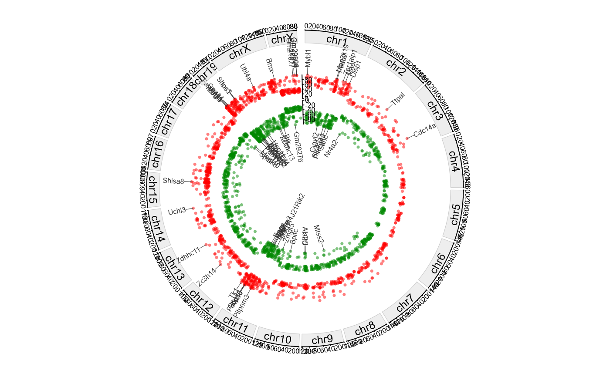

Plot genome-wide DMGs circos with separate tracks for hyper/hypo and top-gene annotations.
Usage
plot_dmg_circos(
dmr_file,
gff_file = NULL,
format = "auto",
label_type = "name",
gene_table = NULL,
y_transform = "none",
chrom_height = 0.08,
chrom_color = "#eeeeee",
chrom_border = "#cccccc",
chrom_cex = 0.8,
gap_degree = 1,
x_tick_by = 2e+07,
axis_cex = 0.5,
last_gap_degree = 3,
scatter_height = 0.15,
top_up = 30,
top_down = 30,
up_color = "#ff0000",
down_color = "#008800",
point_cex = 0.5,
annotation_height = 0.18,
label_cex = 0.5,
label_rotate = 0,
label_font = 1,
connector_lwd = 0.5,
connector_col = "#333333",
connector_len = 0.2,
connector_elbow = 0.8
)Arguments
- dmr_file
DEG table from MethylKit analysis.
- gff_file
Genomic structural annotation
GFF3/GTFfile path.- format
Format of GFF3/GTF file. ("auto", "gff3", "gtf").
- label_type
Label by gene name or gene id. ("name", "id").
- gene_table
Optional gene ID/name mapping table (first two columns: id, name).
- y_transform
Y-axis transformation for
meth.diff. ("none", "log2", "log10").- chrom_height
Chrom track height. (0.08).
- chrom_color
Chromosome track fill color. ("#eeeeee").
- chrom_border
Chromosome track border color. ("#333333").
- chrom_cex
Chrom name cex. (0.8).
- gap_degree
Gap degree between chromosomes. (1).
- x_tick_by
Chromosome axis tick step (bp). (2e7).
- axis_cex
Axis text cex. (0.5).
- last_gap_degree
Gap degree between last and first chromosome. (3).
- scatter_height
Scatter track height. (0.15).
- top_up
Number of top hyper-methylated DMGs to annotate. (30).
- top_down
Number of top hypo-methylated DMGs to annotate. (30).
- up_color
Point color for hyper-methylated DMGs. ("#ff0000").
- down_color
Point color for hypo-methylated DMGs. ("#008800").
- point_cex
Point size (cex). (0.5).
- annotation_height
Track height for annotation rings. (0.15).
- label_cex
Label size (cex) for top-gene annotations. (0.5).
- label_rotate
Label rotation degree (counterclockwise). (0).
- label_font
Font for chromosome and gene labels. (1).
- connector_lwd
Line width for point-label connectors. (0.5).
- connector_col
Color for point-label connectors. ("#333333").
- connector_len
Connector length. (0.2).
- connector_elbow
Connector elbow. (0.8).
Examples
dmr_file <- system.file(
"extdata",
"example.dmr",
package = "GAnnoViz")
gff_file <- system.file(
"extdata",
"example.gff3.gz",
package = "GAnnoViz")
plot_dmg_circos(
dmr_file = dmr_file,
gff_file = gff_file,
format = "auto",
label_type = "name",
gene_table = NULL,
y_transform = "none",
chrom_height = 0.08,
chrom_color = "#eeeeee",
chrom_border = "#cccccc",
chrom_cex = 0.8,
gap_degree = 1,
x_tick_by = 2e7,
axis_cex = 0.5,
last_gap_degree = 3,
scatter_height = 0.15,
top_up = 30,
top_down = 30,
up_color = "#ff0000",
down_color = "#008800",
point_cex = 0.5,
annotation_height = 0.18,
label_cex = 0.5,
label_rotate = 0,
label_font = 1,
connector_lwd = 0.5,
connector_col = "#333333",
connector_len = 0.2,
connector_elbow = 0.8
)
#> Import genomic features from the file as a GRanges object ...
#> OK
#> Prepare the 'metadata' data frame ...
#> OK
#> Make the TxDb object ...
#> OK
